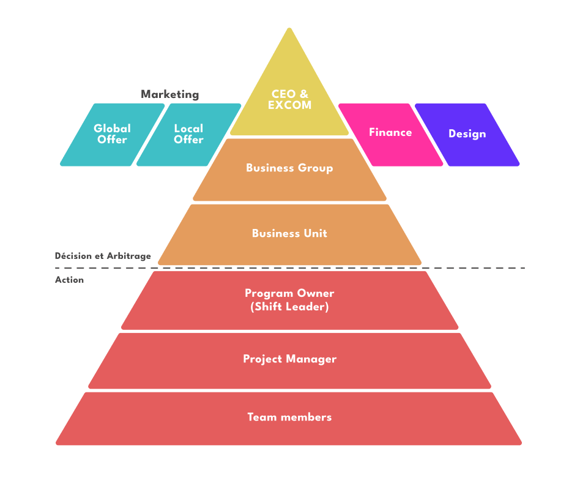
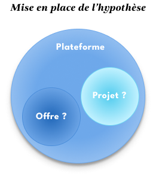
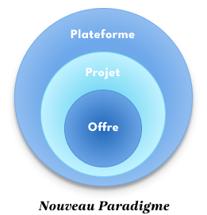
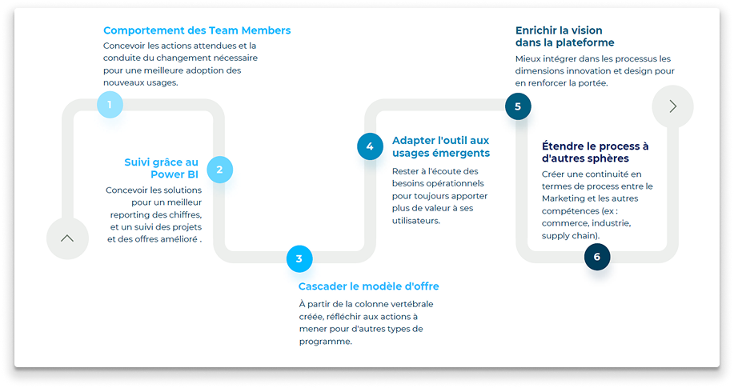

Et si le plus grand désaccord était celui que personne n'a jamais pu avoir ?
Nexans déploie SHIFT Prime, une plateforme de pilotage des campagnes marketing à l'échelle mondiale, construite sur Microsoft Project Accelerator. Sur le papier, tout est en place. Dans les faits, l'adoption ne décolle pas et les niveaux de l'organisation ne s'alignent pas. J'interviens comme lead product designer pour refondre la plateforme et comprendre pourquoi elle ne prend pas.
On m'a demandé de réparer une plateforme. Chacun avait raison depuis là où il se tenait, et c'est exactement ce qui bloquait.
Une plateforme en place, et une adoption qui ne vient pas
Nexans déploie SHIFT Prime pour piloter ses campagnes marketing à l'échelle mondiale — une plateforme construite sur Microsoft Project Accelerator, pensée pour donner de la visibilité sur les initiatives, les budgets et les performances, depuis les équipes locales jusqu'au comité de direction.
Le constat est net : les équipes ne s'en emparent pas. Le pilotage reste flou là où la plateforme devait l'éclairer, et les niveaux de l'organisation ne s'accordent pas sur ce qu'ils regardent.
Refondre la plateforme. Améliorer l'expérience. Voilà ce qu'on me demandait de regarder.
Posé ainsi, c'est un problème de produit : une interface à revoir, des fonctionnalités à ajuster, une conduite du changement à muscler. On cherche du côté de l'outil, puisque c'est l'outil qui ne prend pas.
02 — Le déplacement du regard
Tout le monde parlait la même langue. Personne ne parlait de la même chose.
J'entre par le langage plutôt que par l'interface. Un atelier glossaire, en apparence anodin : mettre à plat les termes que tout le monde emploie tous les jours.
Et le sol se dérobe. Les mêmes mots ne recouvrent pas les mêmes réalités selon l'endroit d'où on parle. Ce qu'une business unit appelle un projet n'est pas ce qu'une autre appelle un projet. Ce qu'un niveau considère comme une offre en est un autre pour le niveau au-dessus. Rien de tout cela n'est fixé nulle part — le vocabulaire s'est construit localement, par sédimentation, dans des entités réparties sur toute la planète.
Ce qui rend la situation redoutable, c'est que personne n'est en tort. Chacun décide, priorise et rend compte depuis sa propre définition, en croyant de bonne foi partager celle des autres. Aucune position dans l'organisation ne permet de percevoir l'écart : il faudrait être à deux endroits à la fois.

Constat
Six niveaux, du comité exécutif aux équipes. Chacun assigne à celui du dessous, rapporte à celui du dessus. Personne n'a tort : chacun ne voit que son étage et son voisin immédiat, et raisonne juste à partir d'un fragment.
Conséquence
L'information descend ces six niveaux un par un et se reformule à chaque passage. Six étages plus bas, ce n'est plus la même chose — sans que personne n'ait rien décidé.
Un mot mal partagé ne coûte pas un malentendu. Il coûte des budgets, des arbitrages et des mois de travail dans la mauvaise direction.
Le désalignement n'était donc pas dans la plateforme. Il était en amont, dans un langage qu'on croyait commun et qui ne l'était pas. Aucune interface ne peut réparer cela — un outil qui outille un malentendu ne fait que l'industrialiser à l'échelle du groupe.
03 — L'instrument
Fixer ce que chaque terme désigne, et poser leur articulation
Le glossaire n'est pas un livrable. C'est l'instrument qui rend le désaccord formulable — un espace où les rationalités de chacun peuvent enfin se rencontrer, au lieu de coexister sans jamais se croiser.
Son intérêt n'est pas de produire des définitions officielles. Il est de faire apparaître, dans la même pièce, que deux personnes qui se comprenaient parfaitement depuis des mois ne parlaient pas de la même chose.
Trois termes concentraient l'essentiel du désordre : plateforme, projet, offre. Personne ne savait dire comment ils s'articulaient — et chacun tenait pour évidente une articulation différente.

AvantLes trois termes coexistent sans hiérarchie ni relation établie. Chacun place l'offre et le projet là où sa propre pratique les situe.

AprèsUne articulation unique, valable à tous les niveaux. La plateforme accueille les projets, les projets accueillent les offres.
Plateforme
L'environnement commun qui accueille l'ensemble des projets.
Projet
Une initiative avec son propre cycle de vie, hébergée par la plateforme, dans laquelle des offres viennent s'inscrire.
Offre
Une entité autonome, avec son cycle de vie propre, indépendante des projets mais injectée dans ceux qui la portent.
Le gain n'est pas d'avoir rangé trois mots. Il est d'avoir découplé deux cycles de vie qui se confondaient : une offre ne naît ni ne meurt avec le projet qui la porte, et un projet peut en accueillir plusieurs. Tant que les deux étaient tenus pour une seule et même chose, aucun pilotage commun n'était possible.
L'outil compte moins que ce qu'il permet de dire.
De là découle un second déplacement, plus structurant. Si l'offre a une vie propre, c'est elle — et non le projet — qui doit servir d'unité de pilotage : la seule qui fasse sens à tous les niveaux à la fois, parce qu'elle relie le terrain au marché.
04 — Le monde que le déplacement fait apparaître
Une fois l'unité de pilotage changée, tout devient concevable
Cette bascule n'est pas un ajustement de vocabulaire : l'offre devient la colonne vertébrale du pilotage. Dès qu'elle est posée, cinq chantiers s'ouvrent en même temps — aucun n'était formulable tant que chacun pilotait depuis sa propre définition.
01
Un focus sur l'offre
Un template par offre globale pour faciliter sa duplication dans les business units, un système de tags pour la granularité, et des initiatives locales qui s'adossent à l'offre globale plutôt que de la contourner.
02
Un meilleur suivi de projet
Une vue claire sur les étapes, du market sizing au scale-up. Des tâches simplifiées, des alertes sur les risques et les prévisions, des notifications qui déclenchent l'action.
03
Une centralisation de l'information
Les documents rassemblés dans l'environnement M365, accessibles depuis la plateforme. Une documentation apprise par l'usage. Et la distinction explicite entre information statique et dynamique, pour rendre le pilotage agile.
04
Responsabilité et sécurité
Des rôles définis à chaque étape du projet et de l'offre, un sign-off pour approuver les jalons, et des règles de calcul harmonisées dès le démarrage.
05
Onboarding et usages
Des formations à l'outil, des program owners et project managers transformés en ambassadeurs auprès des équipes, et des supports partagés pour harmoniser les présentations.
Aucun de ces chantiers n'était accessible tant qu'on cherchait le problème dans l'interface. Tous le deviennent ensemble, parce qu'ils procèdent du même déplacement.
05 — Ce que ça change dans le travail
Une colonne vertébrale, et une trajectoire au-delà de la V1
Le modèle d'offre ne règle pas seulement la V1 : il donne au produit une profondeur. À partir de cette colonne vertébrale, une roadmap se dessine — le comportement attendu des équipes et la conduite du changement, le reporting et le suivi consolidés, la cascade du modèle vers d'autres types de programmes, l'adaptation continue aux usages qui émergent, l'enrichissement de la vision, et l'extension du processus à d'autres métiers du groupe : commerce, industrie, supply chain.

La roadmap : ce que la colonne vertébrale rend possible, bien au-delà du premier lot.
Côté conception, cela s'est traduit par une matrice d'impact pour arbitrer, un cadrage des phases de delivery, les user stories de la V1, et une roadmap qui donne de la profondeur produit au-delà du premier lot.
On ne conçoit pas un outil de pilotage. On conçoit ce sur quoi une organisation accepte de s'accorder.
Résultats
Ce que la refonte a produit
+75%
d'adoption sur le premier trimestre après le lancement de la V1
8 h
économisées par semaine et par équipe, en moyenne
+20%
de ROI sur les campagnes marketing pilotées depuis la plateforme
Ce que ça a produit ensuite
La plateforme est la brique qui a rendu possible le pilotage mondial des initiatives marketing du groupe. Sur cette base, le programme SHIFT a produit :
+20 M€
d'EBITDA additionnel sur les solutions à valeur ajoutée
−40%
de besoin en fonds de roulement
06 — Ce que ce projet a ancré dans ma pratique
Il est souvent compliqué de voir un système dans son entier. Il faut alors construire l'endroit d'où le regarder ensemble.
On ne demande pas aux gens de mieux se comprendre : on construit l'endroit où ça devient possible.
Personne, dans cette organisation, ne raisonnait mal. Chacun tenait un raisonnement juste à partir de ce qu'il pouvait voir depuis sa place — et c'est précisément ce qui rendait le désaccord introuvable. Un silo n'empêche pas de bien penser ; il empêche de savoir sur quoi on s'appuie pour penser, et donc de soupçonner que le voisin s'appuie sur autre chose.
C'est pour cela que je n'ai pas commencé par l'interface. Un outil ne répare pas un malentendu, il l'industrialise à l'échelle du groupe. Il fallait d'abord fabriquer un lieu — un atelier, un vocabulaire commun, une articulation partagée — où ce que chacun tenait pour évident puisse enfin être posé sur la table et confronté. C'est devenu ma constante, quel que soit le terrain : avant de concevoir ce qu'un collectif utilise, comprendre ce depuis quoi il regarde.